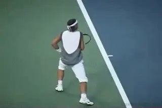
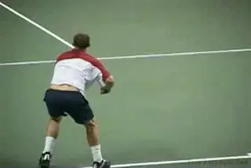
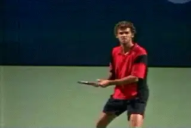
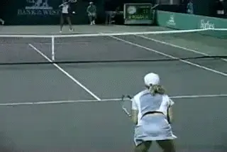
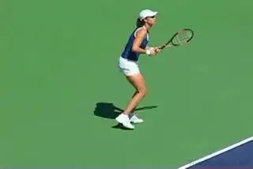
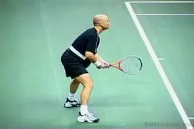
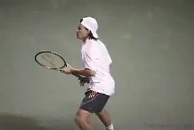
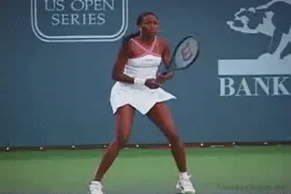
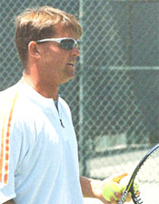

Situational and Scenario Analysis¶
Part 2
Craig Cignarelli
Learning to win means devising and improvising scenarios to against the various game styles in the pro game and at all other levels. In Part 1 of this article. (Click Here) we presented some examples of the incredible range of scenarios that can occur in matches. Let's continue in Part 2 by looking at another series of scenarios most players at most levels encounter sooner or later.
Developing your ability to do situational analysis both before and during matches is a learned skill, a skill that frequently makes the difference between winning and losing. No two match situations are ever exactly the same, and the point isn't to memorize a series of fixed answers. The point is to study these examples in order to help you learn the process of adaptation.

What if you are losing the war, side to side?
Scenario 1: It is a baseline war moving side to side and the opponent seems to win all the big points. Pro Example: Rafael Nadal
You are playing into his hands by trying to run with this opponent, even if movement is one of your strengths. Examine the rally direction on the big points. If you are hitting side to side and losing, then you are probably going down the line into your opponent's strength or going down the line too soon. Reel in your game somewhat, make the points simpler, and focus on finding the best diagonal. Play your serves and returns with the intent of forcing your opponent to hit crosscourt into your favorable rally direction as we explained in the article on serve and returns diagonals (Click Here).
Experiment with stepping up closer to the baseline and when you go for winners, taking the ball earlier. Again, be aware of what diagonal you are on.
Another option is slicing short or a hitting dropshot to bring your opponent into the net. You may also try a loop deep and sneaking in behind it. These options may not be the strength of your game but if you are still losing in the rallies, it is worth the experiment.

How do you reverse an inside attack?
Scenario 2: Your opponent is playing your weak side and attacking your strong side. Pro Example: Andy Roddick
A typical pattern for this type of player is to hit inside out forehands to your backhand to get an advantage and then go inside in to hurt you or hit winners. Your first goal is to change the rally on either a short ball or one that is closer to the middle. You can generate balls closer to the middle, by hitting down the middle yourself and taking away the opponent's angle for attack. (Click Here for more detail on how this works.)
Next try to turn the exchange around and hit your forehand inside out to his backhand or switch the diagonal and hit forehand to forehand if you can hold your own or get ahead on that diagonal.
Another strategy is to bring your opponent in with low short slices. Or you can try coming to net off high looping shots by sneaking in or charging off deep shots hit from your weak side. Your opponent may feel pressured on the passing shot and miss some balls, especially at critical times.

What if high balls are making you hit short?
Scenario 3: You are being pinned in the corner with high balls to your backhand (your weaker side) and the opponent is just waiting for you to hit one short. Pro Example: Gustavo Kuerten
Roll a high and deep crosscourt backhand and look to hit an inside in forehand on the next ball. Roll high and deep down the middle and try to sneak in with a swinging volley. Use your slice down the line when the ball is closer to the middle of the court than the sideline. Step up and drive one or two down the line on noncritical points. If you make them, perhaps your opponent will think twice about his strategy.
Loop, or hit heavy to the forehand side, to change the rally, early in the point. Change your court position so you are either deep waiting for the ball to drop and looking for the passing shot, or well inside the baseline looking to take the ball on the rise before it gets above your shoulder.

What about a fast opponent with great angles?
Scenario 4: Your weapons are your down the line winners and your opponent is very fast and hits great angles. Pro Example: Kim Clijsters
You have to look for the chance to hit behind your opponent and wrong foot her. Continue to open the court crosscourt, but then go back crosscourt even when the down the line is open. You may catch her moving the wrong way and draw some errors. As she adapts this will probably extend the points, but she will be less certain about covering the line when you have the opening. This may make your down the line shots more effective if you are judicious in trying them.
Try to keep the ball above her hitting zone if you are going to change direction, as angles are more difficult to create on high balls. Knowing that angles are her strengths, you can also try approaching on balls somewhat more to the middle, which will not open the court as sharply for her crosscourt passes.

How do you counter hard, deep and down the middle?
Scenario 5: Your opponent hits deep and hard down the middle hand-cuffing you and waits for a short ball. Pro Example: Lindsay Davenport
This player is playing low risk tennis. You can counter by taking it one step further. Hit the same shot back down the middle but with less pace and more net clearance. Height on your shots combined with no pace requires your opponent to expend significant energy in order to hit with pace. See if this can frustrate her and draw some errors.
If not, then you can use low slices to stop your opponent from driving the ball with so much pace, and to force her to hit up on her shots. You may also try taking a step back from the baseline to give yourself a little more time to deal with the ball but make sure you extend your swing longer to get the same depth as you had when you were one step closer to the line.

What if the return puts you on defense?
Scenario 6: Your serve is under attack, and you are on defense on the first ball. Pro Example: Andre Agassi
Strive for depth on all serves and drop a bit of pace in order to play a higher percentage of first serves in the court. Attempt more serves into the body. Increase the amount of topspin and kick the ball higher to make it more difficult for the returner to step in. Begin to read the return patterns of your opponent and make quick first step moves to counter their patterns. Now play defense on your first shot and hit high, deep, and crosscourt to neutralize the attacking returns.

How to you counter a deep drive followed by a drop shot?
Scenario 7: Your opponent drives you deep to a corner and drop shots to the opposite side. Pro Example: Guillermo Coria
Respond to the deep drives with high cross-courts, even looping moon balls. Drop shots are much more difficult to perform and take longer to reach their target if the player has to make higher contact. Concentrate on a quick recovery forward after you are backed up out of position. You may choose to hit a loop down the line to make the opponent hit the dropshot on the run. You may also choose simply to increase your pace, as the dropshot is also more difficult to execute off faster balls.

What if your opponent cuts off your loops with swinging volleys?
Scenario 8: You are being driven off the court with angles and your loop responses are being taken as swinging volleys. Pro Example: Venus Williams
Play deep down the middle off the angles and work hard to recover quickly. This is an aggressive baseliner who will attack everything so use the middle of the court to eliminate her angles and use depth to keep her back. Hit deep towards the middle, or moderately crosscourt. This will make it more difficult for her to hurt you with an angle. Attempt to take the net from her when you can and put her on the defensive by mixing in some approaches of your own.
Got a scenario for me versus a tough opponent of your own? Post a description in the Forum under the "Strategy" section, and I'll try to come up with some suggestions on how you can adapt and counter it in your own matches.

Craig Cignarelli is one of the most prolific and successful developmental coaches in the country. His original analysis of professional tactics and movement is unique in modern coaching. Based at the renowned Riviera Country Club in Southern California, Craig has personally nurtured 4 junior players from the beginning of their careers who have gone on to achieve #1 national rankings. Currently he is working with a cadre of aspiring WTA and ATP players, as well as competitive juniors at all levels. Versed in 4 languages, Craig is completing his first book "What Champions Know," which forms the basis for his articles on Tennisplayer.